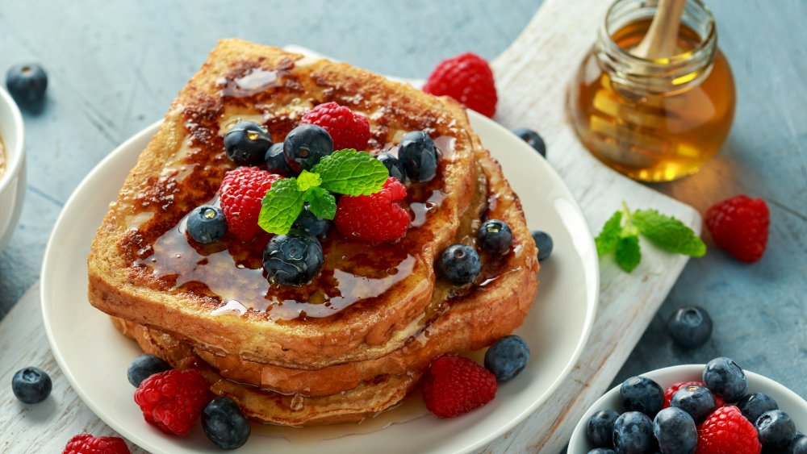

French Toast

Compliment Your day with some delicious French Toast
This delicious plate is a nice treat for the family. The tasty and aromatic combination that French toast delivers will surely brings smiles to the table.
Ingredients
- Eggs
- Brioche Bread
- Cinnamon
- Powder Sugar
- Strawberries and Bananas
- Maple Syrup
Directions
- Crack five to six eggs and mix
- warm skillet and apply butter to prevent Toast from sticking
- Soak bread in egg
- place on skillet and let cook until golden brown appearance
- chop Strawberries and Bananas
- Top French Toast with fruit, powder sugar and cinnamon
- Apply Maple Syrup to your liking
Back To The Recipes